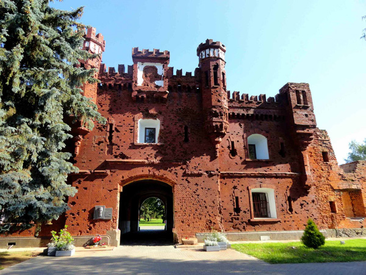

| Главная | Софийский собор | Озеро Нарочь | Борисоглебская церковь | Брестская крепость | Мирский замок | Беловежская пуща | Несвижский замок |
|---|
На следующий день после начала Второй мировой войны, 2 сентября 1939 года, Брестская крепость впервые подверглась бомбёжке со стороны немцев: немецкие самолёты сбросили 10 бомб, повредив Белый дворец. В казармах крепости в это время располагались маршевые батальоны 35-го и 82-го пехотных полков и ряд других, достаточно случайных частей, а также мобилизованные резервисты, ожидавшие отправки в свои части. Гарнизон города и крепости был подчинён оперативной группе «Полесье» генерала Францишека Клееберга; начальником гарнизона 11 сентября был назначен отставной генерал Константин Плисовский, который сформировал из имевшихся в его распоряжении подразделений общей численностью 2000—2500 человек боеспособный отряд в составе 4 батальонов (три пехотных и инженерный) при поддержке нескольких батарей, двух бронепоездов и некоторого количества легких французских танков «Рено FT-17». Противотанкового оружия у защитников крепости не было, между тем им пришлось иметь дело именно с танками. К 13 сентября из крепости были эвакуированы семьи военнослужащих, мосты и проходы заминированы, главные ворота заблокированы танками, на земляных валах устроены окопы для пехоты.